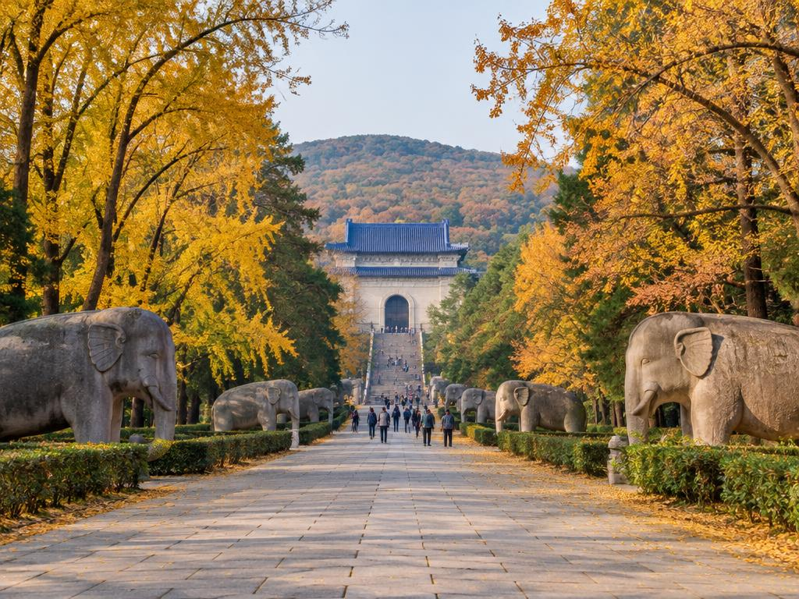
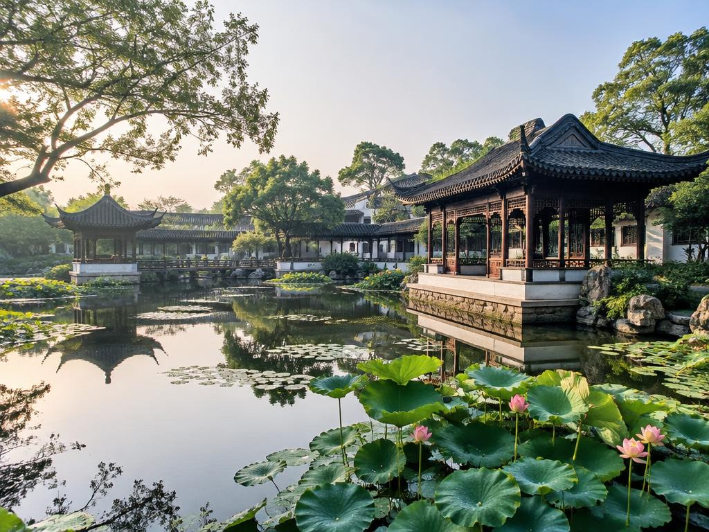
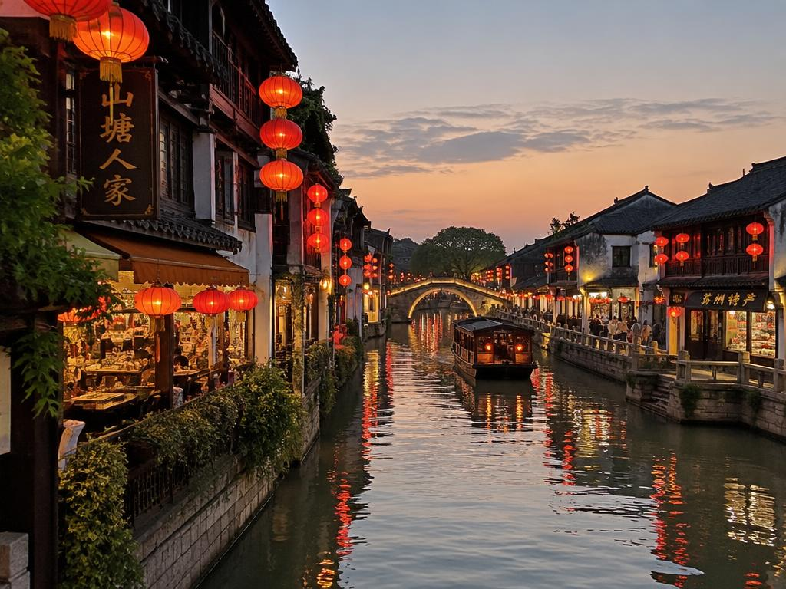
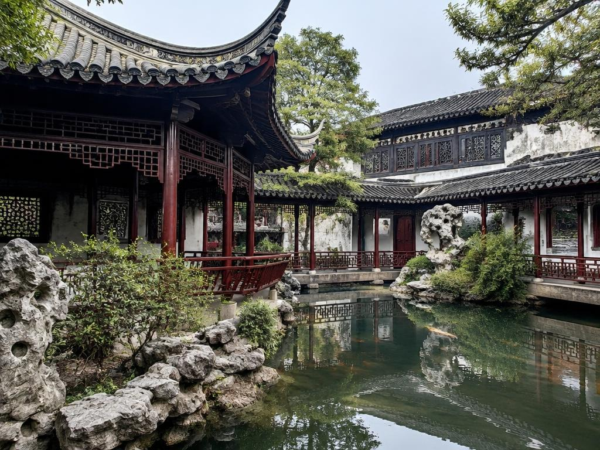
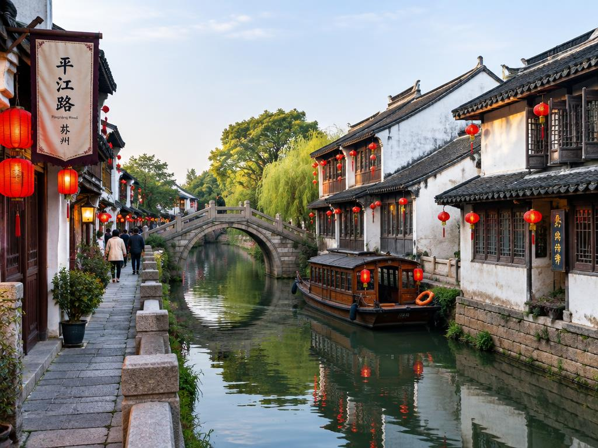
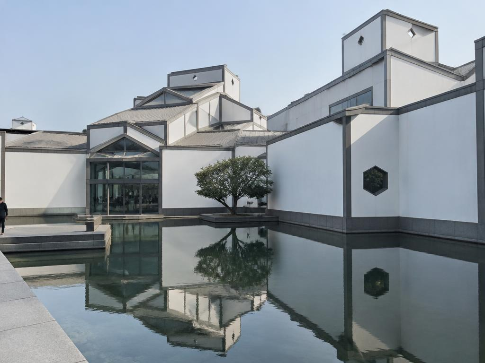
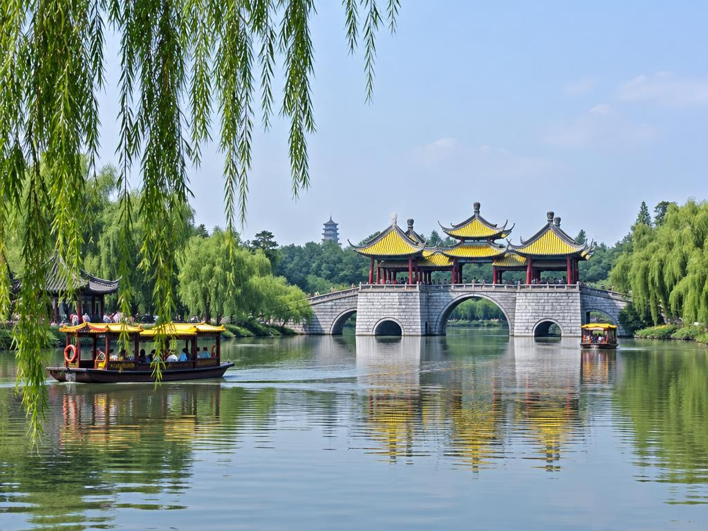

Nanjing
Ming Xiaoling Mausoleum
The Ming-era imperial mausoleum and its tree-lined Sacred Way.
Experience
Ming Xiaoling Mausoleum
Follow the cultural roots of four cities through historic landmarks, gardens, waterways, performing arts and local food.
← Back to CultureLink12 experiences · 4 cities

The Ming-era imperial mausoleum and its tree-lined Sacred Way.
Ming Xiaoling Mausoleum
Traditional riverside architecture around the Confucius Temple area.
Qinhuai River / Confucius Temple

Traditional-style streets and illuminated architecture in Nanjing.
Laomendong

A classical Jiangnan garden with pavilions, water and carefully framed views.
Classical gardens

A Suzhou-style architectural scene accompanies the performing-arts story.
Kunqu Opera

Historic canal-side street with traditional buildings and lanterns.
Shantang Street

Traditional Jiangnan courtyard architecture illustrating the ancient-town setting.
Huishan Ancient Town and clay figurines

Canal-side lanes and traditional houses in the Jiangnan water-town style.
Qingming Bridge Ancient Canal Area

A landscaped lake scene representing the region’s water-and-garden culture.
Yuantouzhu / Taihu Lake

Contemporary museum architecture used to introduce the museum experience.
China Grand Canal Museum
Lake, willow trees and pavilion views in a classical garden landscape.
Slender West Lake

Traditional Yangzhou-style waterside architecture to introduce local heritage.
Dongguan Street and Huaiyang food culture
Photo note: these are photographic assets already included with the CultureLink site. For some entries, the available photo is representative of Jiangnan architecture or landscape rather than a verified photograph of that exact named landmark; replace those with location-verified photos before public release.